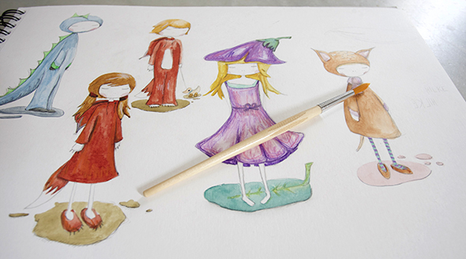
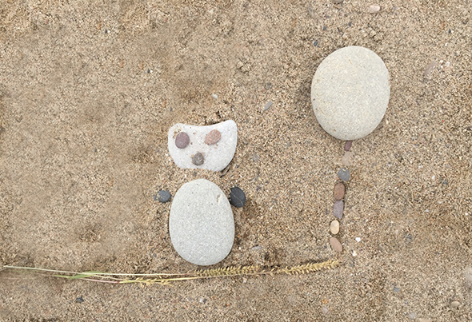
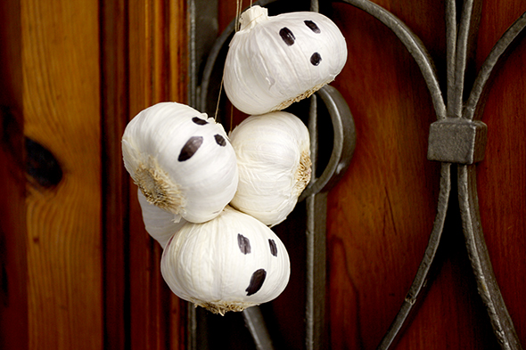
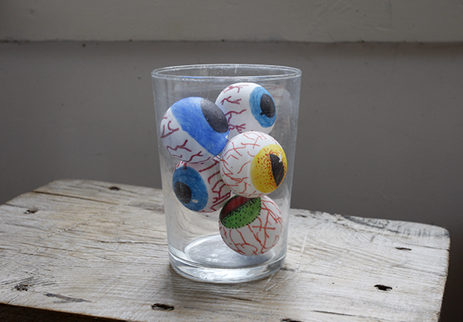
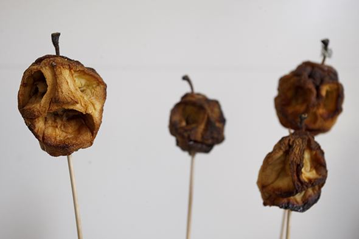

Pinterest
Instagram
ES
EN
DE
☰ Menú
Inicio
La casa
Accesorios
Decorar
Instrucciones
Ilustración
Cantimploras personalizadas
Cuaderno de manualidades y actividades 01
App Not Online Anymore
Blog
Fiestas
Navidad
Pascua
Halloween
Carnaval y disfraces
San Valentín
Cumpleaños
Día de la Madre/Padre
Vuelta al cole
Estaciones
Primavera
Verano
Otoño
Invierno
Qué hacer
Juguetes
Juegos
Imprimibles
Recetas y comida
Decoración
Pintar
Experimentos
Al aire libre
Aprender
Animales
Regalos y joyas
Construir y trucos
Otras manualidades
Material
Papel
Cartón
Rollos de papel
Reciclaje
Piedras
Hojas y naturaleza
Tela, coser y tejer
Inicio
›
Blog
Blog
Fiestas
Navidad
69
Pascua
43
Halloween
27
Carnaval y disfraces
36
San Valentín
15
Cumpleaños
13
Día de la Madre/Padre
4
Vuelta al cole
10
Estaciones
Primavera
19
Verano
42
Otoño
22
Invierno
32
Qué hacer
Juguetes
79
Juegos
125
Imprimibles
49
Recetas y comida
95
Decoración
97
Pintar
64
Experimentos
19
Al aire libre
64
Aprender
67
Animales
116
Regalos y joyas
91
Construir y trucos
81
Otras manualidades
53
Material
Papel
94
Cartón
61
Rollos de papel
23
Reciclaje
121
Piedras
33
Hojas y naturaleza
53
Tela, coser y tejer
42
Comida
Adornos de caramelo para el árbol
Material
Etiquetas de hoja de eucalipto
Ocasión
Calendario de Adviento de nubes
Corcho
Broche del séptimo cielo
Papel
Mariposa de mosaico de revista
kidsmobilebox
Nuevos personajes para las cantimploras

Juguete
Fashion Socks IV: cinta, camisa y calzoncillos
Ocasión
Nuestros calendarios de Adviento
Juguete
Fashion Socks III: vestido de noche
Juguete
Fashion Socks II: bolsos
Juguete
Fashion Socks I: ropa de muñeca con calcetines
Piedras
Cuadro de playa

Hojas
Corona de hojas
Actividad
Se vende hermano
Actividad
Sonny Angels con bañador
Halloween
Fantasmas de ajo de última hora

Halloween
Collar de ojos para Halloween

Ocasión
Cabezas reducidas de manzana

Material
La telaraña de Nerea
Juguete
Globos aerostáticos para Playmobil
Actividad
Caseta de bambú
Material
Piedras de los días de la semana
Ocasión
Comecocos de vampiro
Comecocos de vampiro
← Más recientes
Página 6 / 40
Más antiguas →